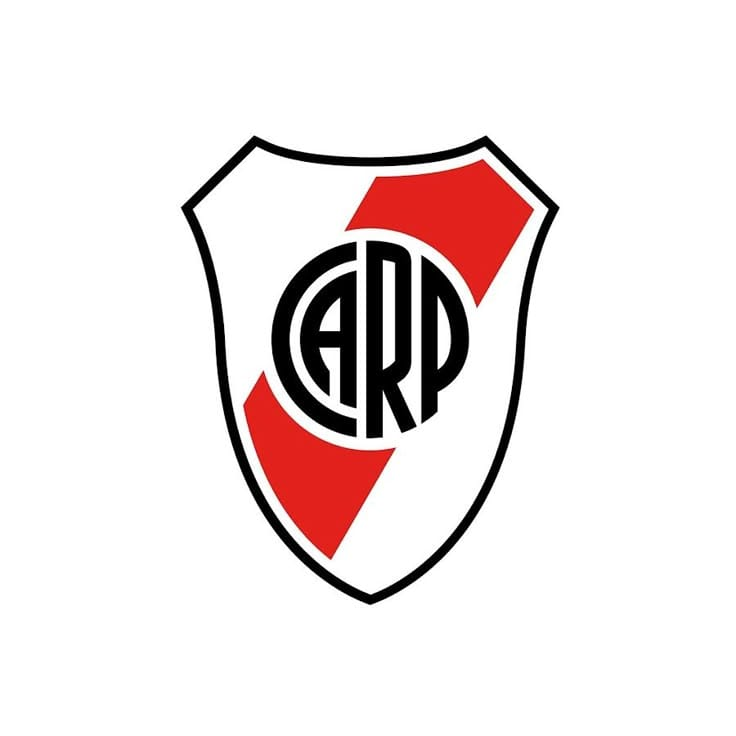

La Inmortal Historia del Club Atlético River Plate
Fundación: El Origen del Millonario (1901)
El Club Atlético River Plate fue fundado el 25 de mayo de 1901 en la unión de dos clubes de barrio: La Rosales y Santa Rosa, en el barrio de La Boca. Su nombre proviene de una referencia portuaria al Río de la Plata. La famosa banda roja, símbolo que lo distingue, se incorporó en 1908, marcando el inicio de una de las instituciones deportivas más importantes del mundo.
El Templo y La Máquina
Tras mudarse a Núñez, el club inauguró el Estadio Monumental de Núñez (actualmente, el más grande de Sudamérica), su hogar y el templo del fútbol argentino. La década de 1940 vio nacer a "La Máquina", un equipo legendario que revolucionó el juego con su estilo ofensivo y técnico, cimentando la mística del paladar negro que distingue a River.
La Consagración Continental
River Plate se consagró a nivel continental en múltiples ocasiones, destacándose la obtención de la Copa Libertadores de América. La Era de Marcelo Gallardo (2014-2022) es considerada la más gloriosa del club, donde, además de numerosos títulos locales, se conquistaron dos Copas Libertadores, incluyendo la épica final de Madrid en 2018, consolidando a River como un referente mundial por su filosofía ganadora y formativa.
¡Más de 120 años de gloria, fútbol y pasión!